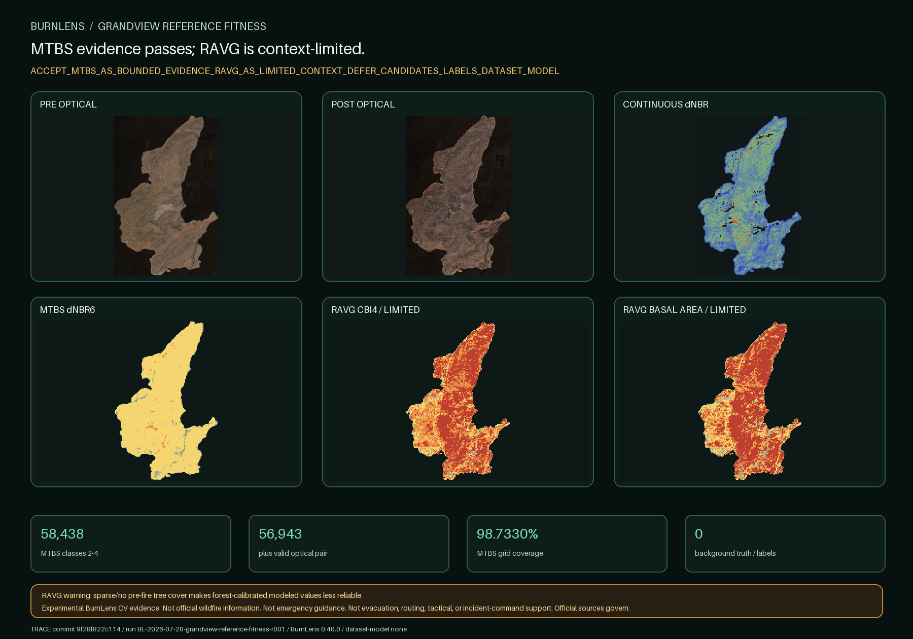

BURNLENS / PHASE TWO / ISSUE #499
MTBS evidence passes; RAVG is context-limited.

Exact selected products
| Program | Member | Native grid | Nodata | Domain | Role |
|---|---|---|---|---|---|
| BAER | baer_or4446612140020210711_10019092_20210711_20210718_dnbr.tif | 396×502 | -32768.0 | continuous | preliminary_continuous_change_context_only |
| MTBS | mtbs_or4446612140020210711_10023989_20210702_20210718_dnbr6.tif | 396×501 | 0.0 | {'0': 170577, '1': 1721, '2': 25728, '3': 329, '5': 41} | categorical_owner_review_evidence |
| RAVG | ravg_or4446612140020210711_10019464_20200810_20210815_rdnbr_ba4.tif | 397×502 | None | {'0': 172363, '1': 1522, '2': 4533, '3': 6068, '4': 14808} | sparse_cover_model_limited_context_only |
| RAVG | ravg_or4446612140020210711_10019464_20200810_20210815_rdnbr_cc5.tif | 397×502 | None | {'0': 172363, '1': 1472, '2': 4481, '3': 3169, '4': 2958, '5': 14851} | sparse_cover_model_limited_context_only |
| RAVG | ravg_or4446612140020210711_10019464_20200810_20210815_rdnbr_cbi4.tif | 397×502 | None | {'0': 172363, '1': 712, '2': 3744, '3': 9522, '4': 12953} | sparse_cover_model_limited_context_only |
All categorical comparisons use nearest-neighbor sampling from native 30 m to the verified 20 m optical grid. No resolution gain is claimed. The MTBS grid covers 61,795 of 62,588 optical-boundary pixel centers; 793 are explicitly unresolved rather than inferred.
Source roles
MTBS: classes 2–4 are categorical burned-candidate evidence; class 1 remains ambiguous and class 5 is reported separately.
RAVG: the delivered record explicitly warns that sparse/no pre-fire tree cover makes these forest-calibrated models less reliable. RAVG is context only and cannot independently qualify a candidate here.
BAER: only unthresholded continuous change context is present. Restricted classified BARC/SBS rasters are absent.
Gate result
ACCEPT_MTBS_AS_BOUNDED_EVIDENCE_RAVG_AS_LIMITED_CONTEXT_DEFER_CANDIDATES_LABELS_DATASET_MODEL
MTBS-backed burned-candidate proposal may proceed only in a separate bounded checkpoint with actual optical/reference evidence and owner yes/no/uncertain review. Affirmative background evidence remains unresolved.
Monitoring Trends in Burn Severity Project (U.S. Geological Survey and USDA Forest Service); USDA Forest Service; ESA (Contains modified Copernicus Sentinel data 2021); Contains modified Copernicus Sentinel data 2021, accessed through CDSE.
No independent ground truth, field validation, official status, endorsement, operational readiness, dataset, split, baseline, model, or accuracy claim exists.
Trace: commit 9f28f822c114788a1a9bb09a52fab22616be0376 · BurnLens 0.40.0 · run BL-2026-07-20-grandview-reference-fitness-r001 · label schema burn-scar-five-state-schema-v0.1.0 · dataset/model none.